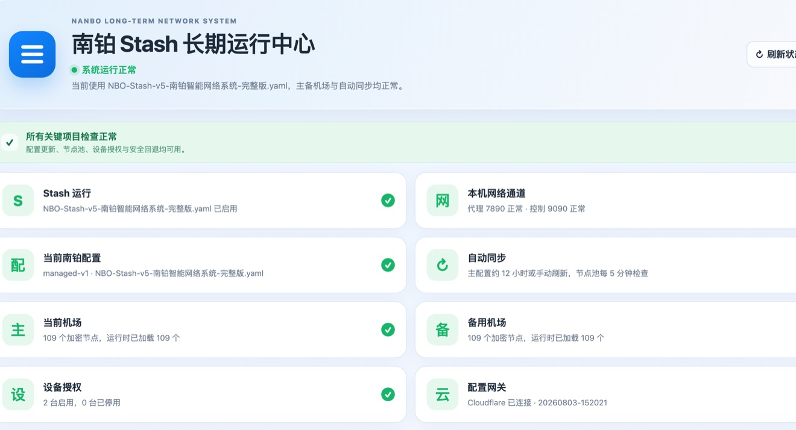

NBO SYSTEM INDEX · 2026
NBO南铂智能系统
智能体、网页、App、自动化统一登记 · 电脑、手机均可使用16全部系统
01云端运行

点击进入云端NETWORK OPERATIONS
立即打开 ↗
南铂 Stash 长期运行中心
点击直接进入云端运行中心，长期查看配置、设备与灾备状态。
跨设备Stash自动检查
02已上线
15网页
CREATIVE AI WEB APP
立即打开 ↗
NBO 灵感封面
上传照片，一次生成封面文案与三端发布内容。
Gemini小红书抖音
0324/7 守护
99App
SERVER GUARDIAN
立即打开 ↗
NBO 服务器管家
一个给非技术人使用的本地服务器健康与备份面板。
ImmichDocker自动备份
04生产中
◇自动化
PHOTO PRODUCTION OS
立即打开 ↗
NBO OS 珠宝修图工作流
从拍摄素材到 Photoshop 精修的标准化交付流程。
Photoshop珠宝摄影SOP
05日常更新
2:1网页
MATCH RISK WORKBENCH
立即打开 ↗
南铂足球赔率工作台
单文件运行的赔率、补单、比分与特殊玩法管理工具。
Odds风险管理单文件
06持续制作
▶自动化
SOCIAL VIDEO PIPELINE
立即打开 ↗
南铂图文卡点视频系统
把原片、封面、卡点和高清发布变成可重复的视频生产线。
9:16卡点高清发布
07持续完善
透明自动化
CUSTOMER ASSET SYSTEM
立即打开 ↗
南铂企业微信客户资产
欢迎语、套餐知识、客户回复和品牌资产的统一中心。
企业微信客户资产透明价格
08可调用
AI智能体
CONTENT AGENT
立即打开 ↗
南铂媒体智能体
围绕男士写真，安排三天运营、视频包装和发布交接。
男士写真3 天运营发布交接
09可调用
VISUAL SAFETY AGENT
立即打开 ↗
封面安全扩图智能体
在不损伤原始精修人物的前提下，完成 9:16 封面扩展。
9:16安全区AI 扩图
10主页在线
72%App
USAGE MONITOR
立即打开 ↗
Codex 余量 Pro
随时查看 Codex 用量与可用状态的轻量工具。
网页Codex用量
11可调用
−18智能体
RISK CONTROL AGENT
立即打开 ↗
投注对冲风险智能体
用情景表、触发赔率和仓位规则做保守风险管理。
情景规划仓位风险控制
12已上线
★★★★★网页
REAL REVIEW ASSISTANT
立即打开 ↗
南铂真实好评助手
AI热门场景一键生成真实评价参考，并直达微信或企业微信。
AI热门微信直达真实评价
13已上线
158网页
CLIENT PORTFOLIO
立即打开 ↗
南铂客户选片中心
客户用手机或电脑浏览真实客片、筛选主题并整理拍摄偏好。
真实客片选风格跨设备
14内部使用
↑网页
CONVERSION INSIGHTS
立即打开 ↗
南铂成交洞察后台
查看匿名浏览时长、热门作品、主题偏好与接近咨询的成交信号。
匿名统计成交信号速度体验
15指令可用
2→1网页
PHOTO RECREATION STUDIO
立即打开 ↗
南铂写真复刻台
上传参考效果图和本人写真，提炼灯光、色调、构图与保真人物的复刻方案。
双图工作流保真优先复刻指令
16Mac 已备份
RAWApp
MAC MEDIA SORTER
立即打开 ↗
照片视频一键分类
在 Finder 当前文件夹内，一键整理照片格式和 2K／3K／4K 视频。
Finder照片分类恢复包